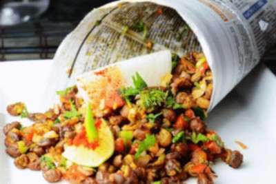
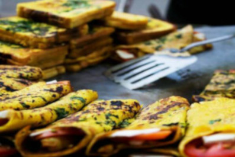
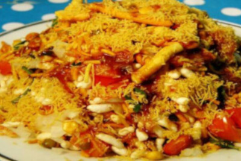
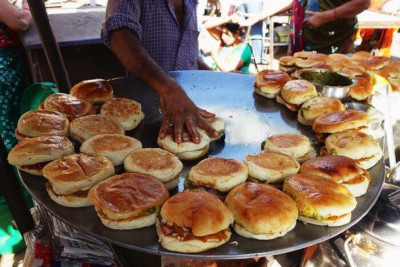
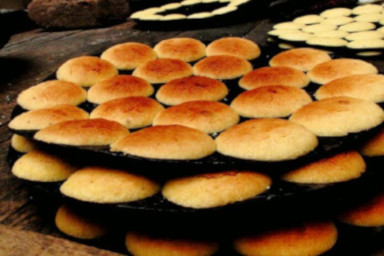
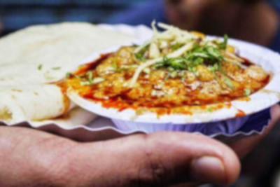
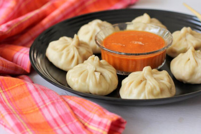

Best Street Food Places
21. Chana Zor Garam

This seasoned chaat does have its health benefits. High on protein, it is a good appetizer for your palate. And of course, a delicious munchy to nibble on!
Where: You will find vendors selling this mouth-watering chaat on every nook and corner of Delhi
22.Besan ka Chilla

This light street food of Delhi is quite a healthy snack to munch upon. A thin layer of gram flour (besan) stuffed with chopped vegetables is to die for. It does serve as an appetizer for many foodies.
Where:Sitaram Bazar in Chandni Chowk
23.Bhel Puri

Although a Mumbai specialty, bhel puri in Delhi is in a totally different league. Not as dry as its Mumbai counterpart, it is adorned with flavors patent to Delhi. The right mixture of salty, tangy and sweet; this famous street food in Delhi should be tried by everyone at least once.
Where: Connaught Place and Bhajan Lal’s Bhelpuri at Sunder Nagar
24.Gupta Burger

You would have never imagined that a little Delhi tadka can transform normal burgers into something totally new. The aloo tikki seasoned with Indian spices and engulfed in deep fried buns is simply addictive..
Where:The local burger carts are present in Delhi at every corner
25. Nan Khatai

The buttery food of Delhi — nan khatai — is a must try for cookie lovers. You will definitely pledge your love to this famous food in Delhi the moment you take your first bit of it and it would melt in your mouth and leave a lingering taste behind.
Where:Local vendors with the best of abilities to create this sweet goodness
26. Chole Kulche

This easily available famous street food in Delhi is a favorite among Delhites.
Where:Near Tiptop market in Karol Bagh, and UPSC Bhawan, Lotan at Chawri Bazaar, Yadav’s Chole Kulche at Saket
27. Momos

Momos have always been a hot favourite among food lovers – young, old middle-aged, vegetarian or non-vegetarian. These tasty dumplings have found their way into becoming a popular food item in Delhi. Stalls serving hot, steamy, delectable momos with red chilli garlic sauce, mayonnaise and oregano can be found in almost every street in Delhi.
Where:Almost every area in Delhi flaunts its local go-to momo stall.